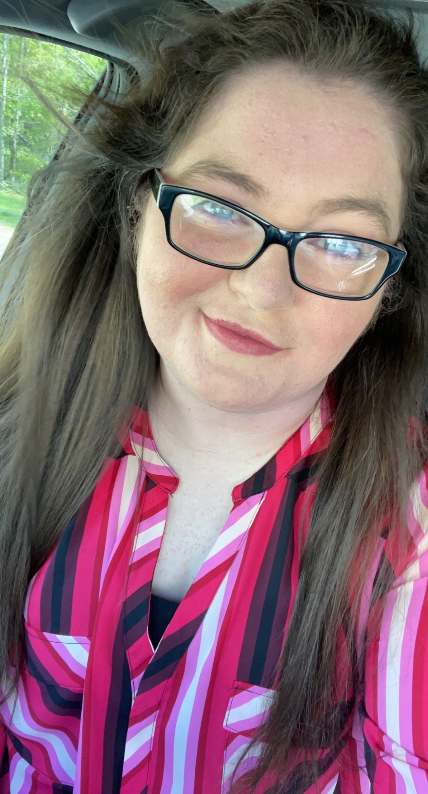

My name is Brandy! I’ve lived in West Virginia my entire life (as you can probably tell from it being the basis of most of my map projects). I graduated in 2018 from Glenville State College (now University) with degrees in land surveying and natural resources management. In 2021, I graduated from Kent State University with my master’s in Geographic Information Sciences (GIS). I have two pups and a cat I love dearly (as well as my bonus cat through my partner)!
Honestly, I wonder the same sometimes. I discovered a love for mapping in my college classes that has progressed steadily over the years. I wanted to test my abilities with data analysis and map creation, but also wanted to share my maps with people, and that’s how this site came about.

Absolutely! I have a list of maps I’m planning on making over the years, but I’m always open to any suggestions or other ideas! I’m not promising that I’ll ever do it, but I might! Check out my upcoming projects to see if I have your idea in the works. If not – suggest it!
Upcoming ProjectsI in no way expect any sort of donations for doing this. I really like all things mapping and these projects help me learn more along the way. I end up paying roughly $110 a year for the software to do these maps/analyses, and then pay around $65 a year for this website. For the value I get out of the cost, it’s 100% worth it to me. However, if you like these maps and want to see them continue, you can help out with a donation! Even just sharing my content helps though.
Venmo PaypalMy coworkers joke that my hobbies span different centuries because I tried making my own butter before. I recently picked up quilting, and that has been super fun! Otherwise, I like to code (check out BrandyB.dev), play with lasers (I used to have a laser business), play some video games, hang out with my partner, and frequent Morgantown, WV's Outback Steakhouse (arguably the best one - try their mashed potatoes, trust me).
If you have any questions, suggestions, or just want to say hi, feel free to reach out to me!
Email: MapsWithB@gmail.com